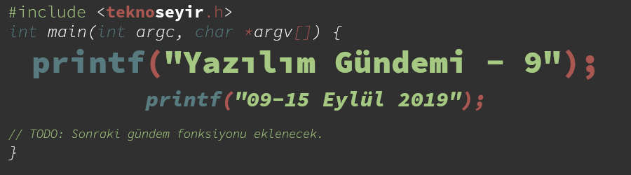

Yazılım Gündemi - 9
9-15 Eylül 2019
İçindekiler

< Önceki Gündem | 9-15 Eylül 2019 | Sonraki Gündem >
1 Python 2'nin 3 aylık ömrü kalmış
Bildiğiniz gibi Python programlama dili uzun bir süredir iki ayrı sürüm üzerinden geliştirilmeye devam ediyor. Fakat Python 2.x numaralı sürümler için yolun sonu gözüktü. Python takımı, 1 Ocak 2020'den itibaren Python 2 sürümünün geliştirilmeye devam edilmediğini duyurdu. Buna güvenlik güncelleştirmeleri de dahil. Yani Python 2 artık tamamen ölüyor.
Açıkcası pek üzüldüğümü söyleyemem. Yarattığı gereksiz "Python 2 mi, 3 mü?" kafa karışıklığını da düşününce bu kadar uzun süre destek verilmesine bile şaşırıyorum. Neyse, ölünün arkasından kötü konuşulmaz ama Python takımı şöyle bir web sitesi açarak, Python 2 sürümünün ölüm gününe geri sayım başlatmış. Bu biraz ağır olmuş sanki.
Python 2 ile yazılmış projelerinizi Python 3 sürümüne geçirmek için Python takımı tarafından yayınlanan şu rehberi inceleyebilirsiniz: Porting Python 2 Code to Python 3. Son son helallik almayı da unutmayın Python 2'den.
2 TypeScript 3.7 ile gelecek yenilikler
5 Kasım'da yayınlanması planlanan TypeScript programlama dilinin 3.7 sürümü ile gelecek olan birkaç özellik bu şekilde:
2.1 Null Coalescing
Bu özelliğin benzeri aslında JavaScript'in kendisinde mevcut fakat bazı durumlarda sorun olabiliyor. Örneğin:
const final_sonuc = sonuc1 || sonuc2;
gibi bir ifadede, sonuc1 değişkeni eğer boş string ya da sıfır gibi falsy
ifadeler varsa, bunları tanımlı değildir olarak kabul edip sonuc2
değişkenini sonuc_final 'e aktarabiliyordu.
TypeScript 3.7 ile gelecek olan ?? ifadesi ile bu sorunun önüne geçilmiş
oluyor. Şöyle ki:
const final_sonuc = sonuc1 ?? sonuc2;
şeklinde kullanım sayesinde artık sonuc1 değişkeni falsy ifadeler içerse
bile tanımlı olarak kabul edilecek, çünkü öyle bir değişken mevcut.
2.2 Optional Chaining
Bu özellik sayesinde artık uzun ve iç içe if sorguları yapmak zorunda kalmayacağız. Önceden şöyle uzun bir ifade ile yaptığımız şeyi:
let sonuc = veri ? (veri.anahtar1 ? veri.anahtar1.anahtar2 : undefined) : undefined;
veri.anahtar1.anahtar2 değerini getirmek için değişkenin tanımlı olmama
ihtimaline karşı böyle bir kullanım yapıyorduk.
Fakat artık bunu şu şekilde sadeleştirebileceğiz:
let sonuc = veri?.anathar1?.anahtar2;
Yeni eklenecek diğer özellikler için bu sayfaya göz atabilirsiniz.
3 Oracle, JDK indirmeleri için artık üyelik istiyor
Oracle elinde tuttuğu Java teknolojisinin suyunu sıkmaya devam ediyor. Şimdi de lisans değişikliğine giderek, artık Java SE Development Kit indirmeleri için üye olmayı zorunlu kıldı ve kişisel (ticari olmayan) projelerde kullanırken de proje hakkında detayları istemeye başlayacakmış. Yani Oracle firması hoşuna gitmeyen projelere JDK vermeyebilir. OpenJDK tarafında bir değişiklik yok, GPL lisansı ile jdk.java.net adresi üzerinden dağıtılmaya devam ediyor.
Nedir bu Oracle'dan çektiğimiz?!
4 Dünya Programcılar Günümüz kutlu olsun!
Her yılın 256'ıncı gününde kutlanan bir günümüz varmış, ben de yeni öğrendim. 256.gün olmasının nedeni de, hem 8-bit ile yazılabilecek toplam 256 sayı olmasından (0 dahil), hem de 2'nin 365'den küçük en büyük katı olduğu içinmiş. Bu yıl da 13 Eylül tarihine denk gelmiş. O hale günümüz kutlu olsun arkadaşlar
5 Diğer Haberler
- GitHub, Rails 6.0 sürümüne geçtiğini duyurdu.
- MDN ve CanIUse güçlerini birleştirdi.
- Google, JavaScript ve WebAssembly motoru V8'in daha hafif bir versiyonu üzerinde çalışıyormuş: V8 Lite.
- Django 3.0 alpha 1 sürümü duyuruldu.
- C++20 konseptleri Visual Studio 2019 16.3 Preview 2 sürümünde kullanılabilir olmuş.
- C++ kütüphane yöneticisi vcpkg aracının 2019.08 sürümü yayınlandı.
- Stripe komut satırı aracını (CLI) açık kaynak olarak yayınladı, GitHub Deposu.
- PHP mail gruplarında hararetli tartışmalar devam ediyor.
- Dart programlama dili 2.5 sürümünü duyurdu.
- Bulut uygulamaları için özelleştirilmiş yeni bir açık kaynak programlama dili duyuruldu: Ballerina, GitHub Sayfası.
- Yeni bir proje yönetim platformu duyuruldu: Clubhouse.
- Eclipse organizasyonu, Jakarta EE 8 projesini açık kaynak olarak kullanıma açtı.
- Dağıtık log sistemi Waltz açık kaynak olarak duyuruldu. GitHub Deposu
- Captcha alternatifi bir girişim: WeHateCaptchas.
- Netlify, FaunaDB için eklentisini duyurdu.
- Yazı sınıflandırma kütüphanesi cherry, 2.0 sürümünü duyurdu.
- Nestedj 4.0.0 sürümü çıktı.
6 Lisans

Yazılım Gündemi - 9 yazısı Eren Hatırnaz tarafından Creative Commons Atıf-GayriTicari-AynıLisanslaPaylaş 4.0 Uluslararası Lisansı (CC BY-NC-SA 4.0) ile lisanslanmıştır.